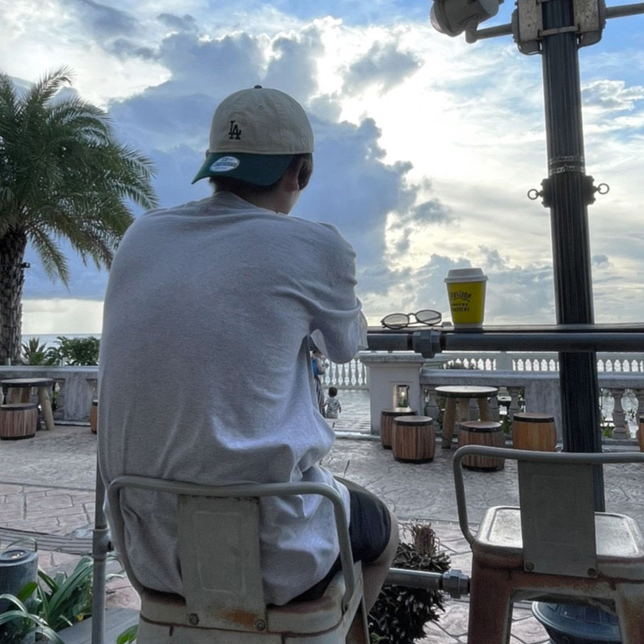

ABOUT

◆名前：Ryohei Ebina/蝦名凌平
◆生年月日：1995年1月30日/現在29歳
◆趣味：エレキギター,バイク,フットサル
◆資格：AWSCertifiedCloudPractitioner,ITパスポート,TOEIC635点,CCENT
関東にて現在Web制作の求職活動をしています。2017年より6年ほどITインフラ業界で保守運用の仕事に従事しておりました。主に手順書の作成と運用受け入れ、アプリ改修時のUATシナリオ作成、PMO補佐業務、運用改善とベンダーへのサポート問い合わせと対応を行っていました。
Tel.090-4136-4850
Mail.ryoheiebina0130@gmail.com
Adobe Illustratorはフライヤー制作、名刺、ロゴの作成、イラストの描画に使用しました。ペンツールも使用可能です。
Adobe Photoshopはバナー制作、画像の切り抜き、ヘッダー写真などの画像加工に使用しました。クイックマスクを使った画像切り抜きも対応可能です。Gifアニメーションを使用した動くバナーも制作実績があります。
VisualStudioCodeはWebサイト制作に使用し、HTML/CSSの基礎知識を職業訓練校にて習得しました。JavascriptはJQueriを使用し、参考サイトからのコードのコピーペーストと値を変更して適用させるレベルは対応可能です。本サイトもJQueriを利用してスマホの表示時のハンバーガーメニュー、スライダー、ローディング画面を実装しています。